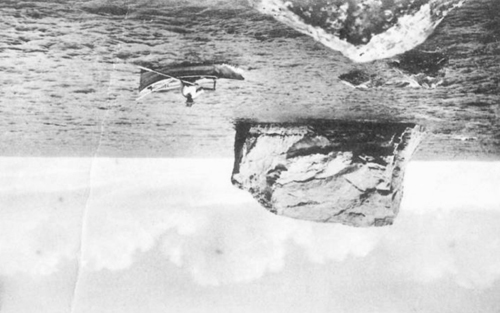

"Another, Once Again, Many Times More"
Summer 2014
July 12 - September 1, 2014
Opening reception: Saturday, July 12, 2-6 pm
Martos Gallery Summer Location:
12395 Main Road, E. Marion NY 11393
Gallery hours:
Friday - Sunday
12-5 pm
In its fifth iteration, the Martos Gallery summer exhibition will feature a number of artists serving as curators, creating shows-within-the show. Invited by curator Bob Nickas, these include:
On the 1st floor of the house:
a show organized by Walead Beshty and Kelley Walker
On the 2nd floor:
a show organized by Carol Bove
including works by Katherine Bernhardt and Youssef Jdia, Elaine Cameron-Weir, Robert Greene, Wade Guyton, Janine Lariviere, Harry Smith, Jack Smith, a large selection from Barry Rosen's sea shell collection as well as a piece by an Anonymous artist.
Basement and garage:
a show organized by Ryan Foerster
including works by Lukas Geronimas, Rochelle Goldberg, Chip Hughes, Daniel Innes, JPW3, Shawn Kuruneru, Rose Marcus, Calvin Seibert and Janice Turner.
Outdoors:
a show organized by Bob Nickas and Virginia Overton
including works by Sam Anderson, Uri Aran, Lisa Beck, Sarah Braman, Jim Drain, Wayne Gonzales, Eli Hansen, Charles Harlan, Jim Kanter and Lisa Ward, Servane Mary, Jason Metcalf, Greely Myatt, Chuck Nanney, Amy O'Neill, Kelly Parr, Ugo Rondinone, Davina Semo and Aaron Suggs.
The overall title of the show, "Another, Once Again, Many Times More" is in tribute to Hudson, of Feature gallery.
For additional information please call 212-560-0670 or email info@martosgallery.com.
Martos Gallery
540 West 29th Street
New York, NY 10001
212-560-0670